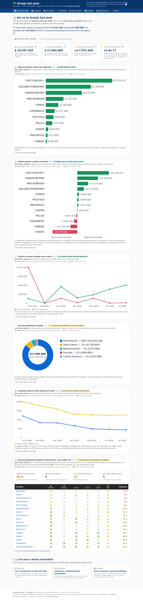

👀 Usar el sitio — recorrido guiado
El sitio granja.rayogestion.com es de solo consulta: muestra la información del libro de la granja, explicada paso a paso. No hay que instalar nada ni iniciar sesión. Este recorrido presenta cada pantalla en el orden en que conviene visitarlas.
🧭 En una frase
Empiece por Inicio para el panorama; baje a Proyectos y Libro diario para el detalle; use Controles para saber en qué confiar; y Mano de obra, Plantillas y Hojas de vida según lo que necesite.
Las pantallas, una por una

- 📊 Inicio (resumen). El tablero gerencial: cuánto entró, cuánto salió y cuánto quedó, con cinco gráficos explicados. Trae la matriz de cobertura (qué proyecto tiene y cuál no tiene información en cada fuente) y un acordeón por proyecto que se abre para ver su detalle. El botón 🖨️ imprime todo en una sola hoja pensada para papel.
- 🗂️ Proyectos. Los 17 proyectos de la granja en una tabla: área, tipo, responsable, estado y balance. Tocando uno se abre su hoja de vida completa (economía, producción, inventario, sanitario, alimentación y controles).
- 📒 Libro diario. Los 108 movimientos del libro de caja, uno por uno: fecha, detalle, cuánto entró o salió y su observación original. Trae filtros y marcas de calidad (🛠 corrección documentada, ⚠ dato por revisar).
- 🚦 Controles. El «revisor automático»: 36 comprobaciones que el sitio hace solo (inventarios, producción vs. ventas, alimento, trazabilidad, sanitario) con un semáforo verde/amarillo/rojo. Al final están las revelaciones.
- 👷 Mano de obra. Cuánto cuesta de verdad una hora de trabajo (salario más prestaciones y aportes de ley, agosto 2026). Incluye una simulación de reparto de horas por proyecto y la sección del hallazgo de ARL.
- 🧾 Plantillas. Repositorio de formatos en blanco para descargar (horas, alimentación, recolección, inventario, donación de servicios). Tiene un buscador que filtra mientras se escribe. Descargar es libre.
- 📁 Hojas de vida. Un expediente documental por proyecto: carpetas donde adjuntar PDF, Word, imágenes y otros documentos de respaldo.
Dos herramientas que aparecen en varias pantallas
📅 Filtro por periodoUna franja arriba deja acotar las fechas. Cómo usarla sin engañarse: ver guía.
⬇️ Exportar a ExcelVarias tablas se bajan como archivo .xlsx real. Cómo hacerlo: ver guía.
💡 Consejo
Cada cuadro del sitio tiene un botón ?. Tóquelo siempre que dude: explica qué está viendo, de dónde sale el dato y a qué corte corresponde.